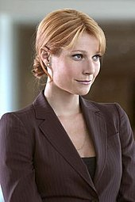
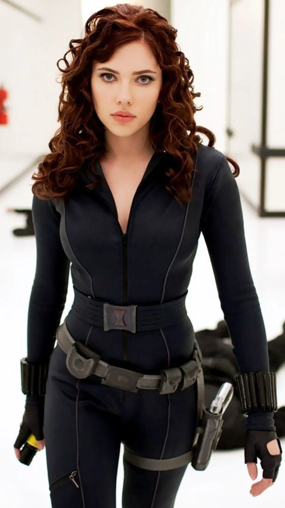
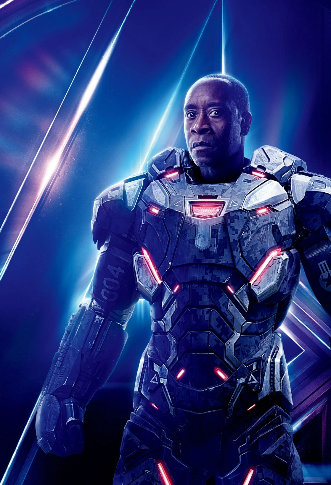
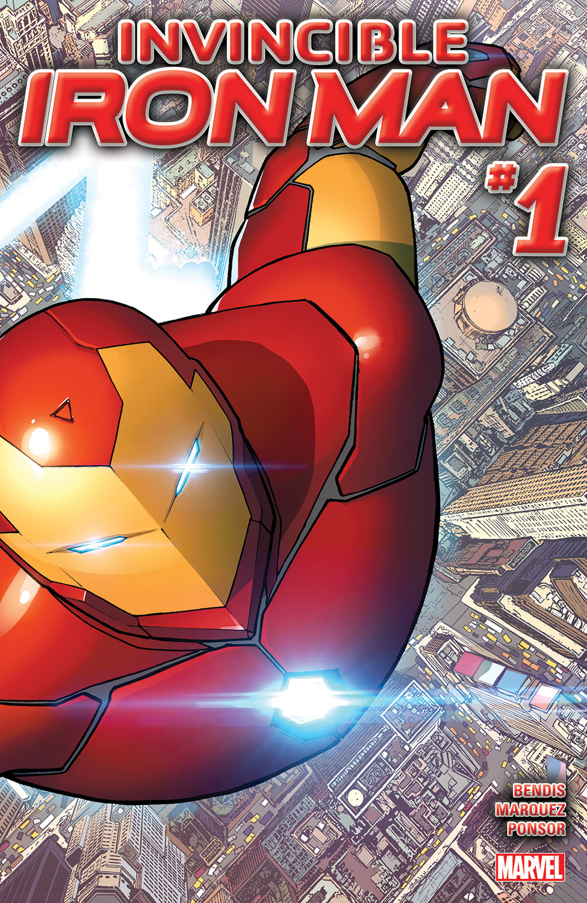
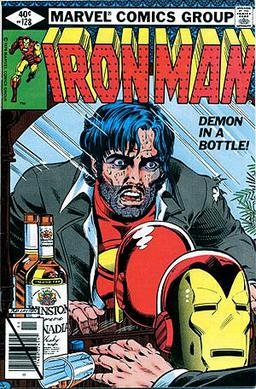

“I am Iron Man.
The suit and I are one.”
– Tony Stark (Iron Man)

Iron man (Tony Stark)
Iron Man is een fictief personage uit de stripboeken van Marvel Comics. Het personage werd bedacht door schrijver Stan Lee en tekenaar Don Heck en maakte zijn eerste verschijning in "Tales of Suspense" #39 in 1963. De echte naam van Iron Man is Tony Stark, een rijke industrieel en genie op het gebied van technologie en engineering.
In de strips wordt Tony Stark ontvoerd door terroristen die hem dwingen om een vernietigingswapen te bouwen. In plaats daarvan bouwt hij een harnas dat hem in staat stelt om te vliegen en superkracht te hebben, en hij gebruikt deze technologie om te ontsnappen en de wereld te beschermen als Iron Man.
Iron Man is bekend om zijn gepantserde kostuum, dat is uitgerust met tal van technologische gadgets en wapens. Zijn krachten omvatten superkracht, snelheid, uithoudingsvermogen en reflexen, en zijn harnas biedt ook bescherming tegen kogels en explosies.
Naast zijn krachten en harnas is Tony Stark ook een slimme uitvinder en heeft hij vele malen nieuwe technologieën ontwikkeld die hebben bijgedragen aan de Marvel-universum. Hij is ook een lid van de Avengers, een groep superhelden die samenwerken om de wereld te beschermen tegen bedreigingen.
Iron Man is in verschillende media verschenen, waaronder stripboeken, films, televisieseries, videospellen en speelgoed. Robert Downey Jr. speelde Tony Stark in de Marvel Cinematic Universe-films, waaronder de "Iron Man"-trilogie, "The Avengers", "Avengers: Age of Ultron" en "Captain America: Civil War".
Iron Man is een van de meest iconische en geliefde personages in de stripboeken- en superheldenwereld en blijft populair bij fans over de hele wereld.

Tony Starks voormalige assistent en vriend, Virginia "Pepper" Potts, vertelt over haar ervaringen met Iron Man
in verschillende films, waaronder "Iron Man" (2008) en "Iron Man 3" (2013).
is vaak betrokken bij de avonturen van Tony en Iron Man en speelt een belangrijke rol bij het redden van de wereld.

Steve Rogers, ook bekend als Captain America, heeft samengewerkt met Iron Man in verschillende films, waaronder
"The Avengers" (2012), "Captain America: Civil War" (2016), en "Avengers: Infinity War" (2018).
Hij en Tony hebben vaak verschillende ideeën over wat de juiste aanpak is, maar ze hebben ook veel respect voor elkaar en delen een gemeenschappelijke
missie om de wereld te beschermen.

Natasha Romanoff, ook bekend als Black Widow, werkte samen met Iron Man in de film "Iron Man 2" en "Avengers" (2012).
Ze beschrijft Tony als een arrogante en grappige man die, ondanks zijn fouten, altijd de juiste beslissing neemt wanneer het er echt toe doet.

James Rhodes, ook bekend als War Machine, is een goede vriend van Tony Stark en heeft verschillende keren met hem samengewerkt in de strijd tegen het kwaad.
Hij vertelt over zijn ervaringen met Iron Man in de films "Iron Man 2" (2010), "Iron Man 3" (2013), en "Avengers: Age of Ultron" (2015).
Comics

Iron Man: Extremis (January 2005 – April 2006)

The Invincible Iron Man (October 07, 2015)

Iron Man: Demon in a Bottle (March – November 1979)